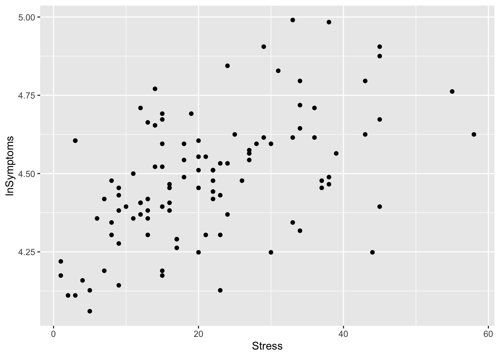
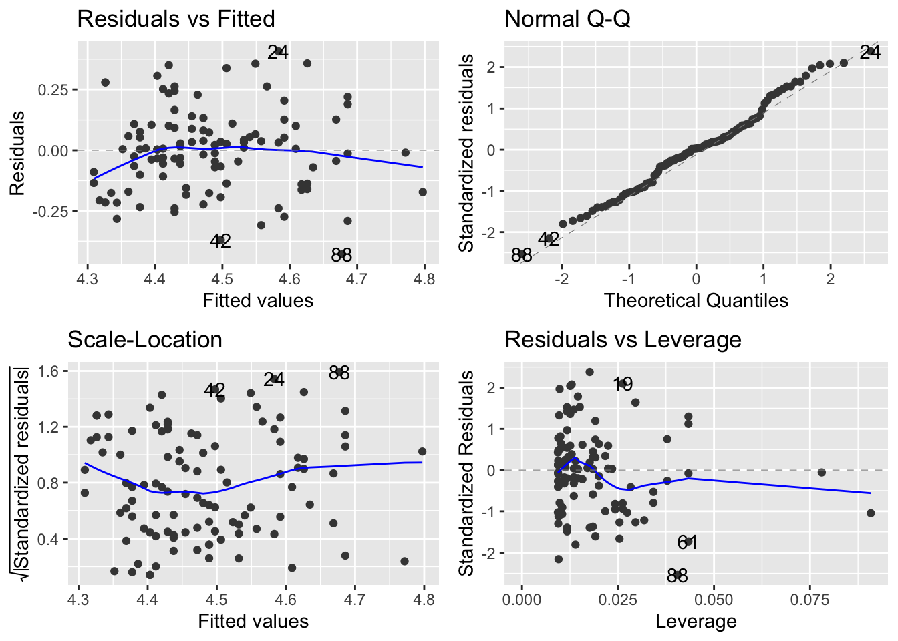

pacman::p_load(tidyverse, psych, ggpmisc, ggfortify, cowplot)24 Example Report
Ok now that we’ve covered all of our bases, let’s take a moment to provide an example of what a written-up report would look like. This is the general format that I expect for the homework and will serve as a useful template moving forward for the rest of the semester. Major areas of importance will be highlighted in the headers. I’ll write them as “steps” here, but you don’t need to list the headers as so in your homework. One thing that I as a data analyst and professor grading data analysis is to include some language in each of my sections that chart anything that I note, impressions about the data or importantly the logic behind any decision that I make. For example if any of the assumptions are violated, I would certainly mention it in my write-up along with any potential steps I may take to address the violation (don’t worry we haven’t covered these…yet). So without further adieu…
24.1 Step 1: Load in packages
24.2 Step 2: loading in the data
Note: I’m just using the Stress and Health data from our previous walkthrough examples
stress_data <- read_table("https://www.uvm.edu/~statdhtx/methods8/DataFiles/Tab9-2.dat")
── Column specification ────────────────────────────────────────────────────────
cols(
ID = col_double(),
Stress = col_double(),
Symptoms = col_double(),
lnSymptoms = col_double()
)24.3 Step 3: plotting the data
Note: I often start with just a raw plot to get a feel for the data. I worry about adding all the other features and formatting once I’m ready for the write-up
stress_plot <- ggplot(data = stress_data, aes(x = Stress, y = lnSymptoms)) +
geom_point()
stress_plot
If there was anything strange or notable in the plot, I would note it here. For example I might note that at first glance there appears to be a positive relationship between Stress and lnSymptoms, and that there aren’t any data points that appear to be outstanding or potential outliers.
24.4 Step 4: Descriptive stats
Note: even though means are not especially important in this analysis (i.e., I’m not worried about comparing the mean value of lnSymptoms to the mean of Stress), it may be worth it to look at other measures related to our scores that convey information about variability (sd), skew, and kurtosis. Primarily here, I’m just looking for red flags. FWIW noting jumps out here, so we are good to move on.
psych::describe(stress_data) vars n mean sd median trimmed mad min max range skew
ID 1 107 54.00 31.03 54.00 54.00 40.03 1.00 107.00 106.00 0.00
Stress 2 107 21.29 12.49 20.00 20.49 11.86 1.00 58.00 57.00 0.62
Symptoms 3 107 90.33 18.81 88.00 88.87 17.79 58.00 147.00 89.00 0.74
lnSymptoms 4 107 4.48 0.20 4.48 4.48 0.19 4.06 4.99 0.93 0.21
kurtosis se
ID -1.23 3.00
Stress -0.19 1.21
Symptoms 0.45 1.82
lnSymptoms -0.28 0.0224.5 Step 5: Building the model
Note: you build the model here, BUT I wouldn’t evaluate or interpret it’s output just yet. Save that until after your diagnostics!!!
stress_symptoms_model <- lm(lnSymptoms~Stress, data = stress_data)24.6 Step 6: Model diagnostics
I will now do a visual diagnostic of the model residuals
# remember you need ggfortify to do this
autoplot(stress_symptoms_model)
The visual inpection here doesn’t raise any red flags.
24.7 Step 7: Evaluate the model
Now it’s time to take a look at our model:
summary(stress_symptoms_model)
Call:
lm(formula = lnSymptoms ~ Stress, data = stress_data)
Residuals:
Min 1Q Median 3Q Max
-0.42889 -0.13568 0.00478 0.09672 0.40726
Coefficients:
Estimate Std. Error t value Pr(>|t|)
(Intercept) 4.300537 0.033088 129.974 < 2e-16 ***
Stress 0.008565 0.001342 6.382 4.83e-09 ***
---
Signif. codes: 0 '***' 0.001 '**' 0.01 '*' 0.05 '.' 0.1 ' ' 1
Residual standard error: 0.1726 on 105 degrees of freedom
Multiple R-squared: 0.2795, Adjusted R-squared: 0.2726
F-statistic: 40.73 on 1 and 105 DF, p-value: 4.827e-0924.8 Step 8: APA camera ready write-up
This has 2 parts
- camera ready figure with caption
- data-analysis write-up
(Also, FWIW, in usually hide the code in this section using the #| echo: false argument in the chunk options. This way you just see the plot and written parts with no interruption. See here for examples.)
First the camera-ready plot, including the regression line and equation. Also be sure to type in a caption below your plot (e.g., Figure 1):
# remember you need ggpmisc loaded to do the line and equation
# and cowplot to APAify it
ggplot(data = stress_data, aes(x = Stress, y = lnSymptoms)) +
geom_point(color="gray", size = 0.5) +
stat_poly_line(level = .95, color = "black") +
stat_poly_eq(aes(label = paste(after_stat(eq.label),
after_stat(rr.label), sep = "*\", \"*"))) +
theme_cowplot()
Figure 1. Natural-log of the number of symptoms as predicted by stress scores
Next the write-up:
We hypothesized that increases in self-reported measures of Stress would correspond to increases in the number of self-reported symptoms. Given that our Symptoms data showed a significant violation of the normality assumption, we transformed these scores using a log-transformation (lnSymptoms). To test this hypothesis the data were submitted to a simple linear regression with lnSymptoms as the outcome and Stress as our predictor. The resulting model was significant, \(r^2\)=.28; \(F\)(1,105)=40.73, \(p\)<.001, and revealed a significant positive relationship between the Stress and Symptoms, \(b\)=.008; \(t\)(105)=6.38, \(p\)<.001.